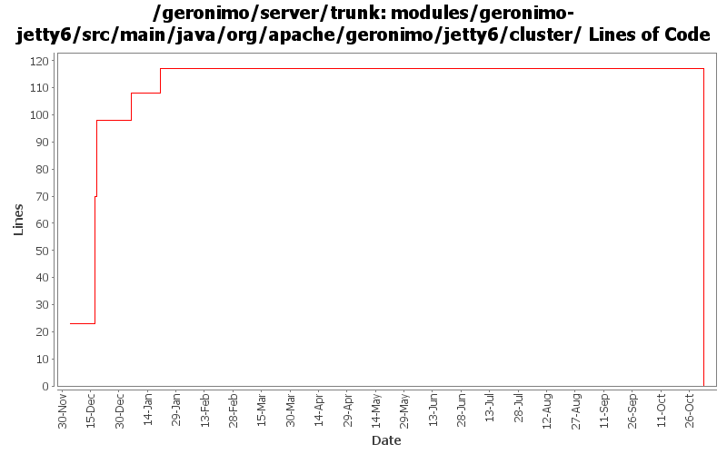

[root]/modules/geronimo-jetty6/src/main/java/org/apache/geronimo/jetty6/cluster

| Author | Changes | Lines of Code | Lines per Change |
|---|---|---|---|
| Totals | 21 (100.0%) | 187 (100.0%) | 8.9 |
| gdamour | 6 (28.6%) | 123 (65.8%) | 20.5 |
| djencks | 1 (4.8%) | 56 (29.9%) | 56.0 |
| adc | 1 (4.8%) | 7 (3.7%) | 7.0 |
| gregw | 1 (4.8%) | 1 (0.5%) | 1.0 |
| prasad | 4 (19.0%) | 0 (0.0%) | 0.0 |
| kevan | 8 (38.1%) | 0 (0.0%) | 0.0 |
GERONIMO-3565. Modules distributed amongst framework/modules and plugins
0 lines of code changed in 4 files:
updated for changes to Jetty session manager
1 lines of code changed in 1 file:
* Add SessionListener.notifySessionDestruction: clients can now receive
callbacks when a Session is destroyed, e.g. when they expire.
* ClusteredSessionManager uses this callback to properly remove the
destroyed session from its internal storage.
* Sync code with the new WADI API.
This fixes GERONIMO-2764 - Clustered HttpSessions are not properly destroyed
during eviction.
13 lines of code changed in 1 file:
Fix build following recent Jetty6 AbstractSessionManager updates.
There are two core changes:
1. update ClusteredSessionHandler to leverage the new API provided
by AbstractSessionManager, which simplifies the implementation and
remove a hack around the initialization of the session attributes
following a session migration.
2. move pre-handle logic from ServletHandler to SessionHandler.
Also, fix a lame type in WADIClusteredPreHandlerFactory: the
expose interface is PreHandlerFactory and not SessionHandlerFactory.
This fixes GERONIMO-2677 - HttpSession Relocation - Sticky load-balancing via HTTP Cookie
50 lines of code changed in 3 files:
Updated to reflect Jetty's signature change.
7 lines of code changed in 1 file:
* Move to 2.0M3-SNAPSHOT version of WADI dependencies;
* Migrate BasicWADISessionManager to new WADI API;
* Move GBean definition of the session timeout before the clustering
configuration such that clustering builders can retrieve this
session timeout;
* Add Session.onEndAccess contract. This is a notification of the
session performed by clients when they are done with their
data accesses. Implementations can implement this method to queue a
replication; and
* Honor David J.'s TODOs in ClusteredSessionManager.
This fixes GERONIMO-2669 fix o.a.g.j.ClusteredSessionManager to match
changes in Jetty AbstractSessionManager
60 lines of code changed in 2 files:
GERONIMO-2669 partial fix for changes in AbstractSessionManager so g. will compile, but presumably the clusteredsessionManager won't actually work
56 lines of code changed in 1 file:
GERONIMO-2537 Fix notices and src headers in recent jee5 updates. Update Web Console notice.txt w/ ibm donation information, add copyright to assembly notice files, and remove ASF v 1.1 license from source borrowed from xerces project
0 lines of code changed in 8 files: